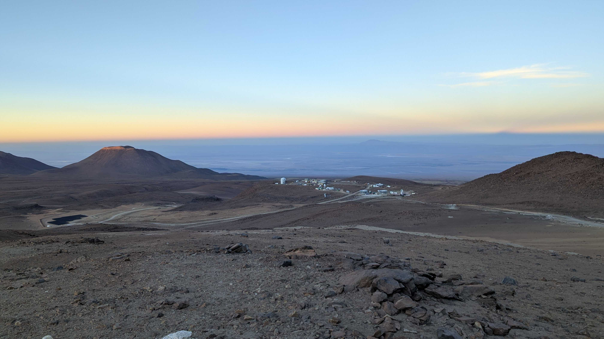
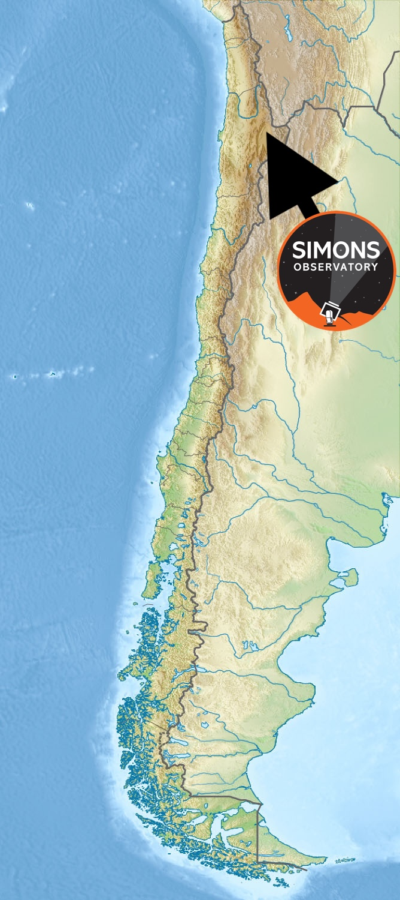

High-altitude cosmology
What is the Simons Observatory?
The Simons Observatory is a new set of telescopes built to study light from across almost the entire history of the Universe.
By observing the cosmic microwave background and other faint signals in the sky, the collaboration is trying to learn how the Universe began, what it is made of, and how cosmic structures evolved over time.

At a glance
- Located high in the Atacama Desert in Chile
- Built to observe incredibly faint microwave signals
- Designed for both cosmology and broader astrophysics
Scientific goals
What are SO researchers hoping to do?
See the infant Universe
Create new images of the Universe in its infancy.
Search for primordial signals
Look for new clues from the very beginning of cosmic history.
Measure the cosmos
Refine measurements of what the Universe is made of and how old it is.
Map hidden matter
Trace how matter is distributed through space and probe dark matter indirectly.
Study energetic feedback
Explore how black holes and cosmic explosions heat and move material through the Universe.
Understand our own sky
Learn more about dust in our galaxy and how it affects what we observe.
Look closer to home
Investigate asteroids and search for possible signals from the hypothesized Planet Nine.
Watch the changing sky
Track night-to-night changes to identify new transient and flickering signals.
And that is only part of the science the observatory can support.
The site
Where is the Simons Observatory, and why is it there?
The Simons Observatory is located on the side of Cerro Toco in the Atacama Desert in Chile. The site was chosen mainly because it is one of the driest places on Earth.
In a typical year, only about 16 mm of rain falls there. For comparison, London received roughly 640 mm in 2025. As discussed here, these telescopes are highly sensitive to water in the atmosphere, so dry, high-altitude locations are essential.
There is also a rich history of astronomy in the Andes, and scientists are deeply grateful to the Chilean people for hosting facilities like this one.
